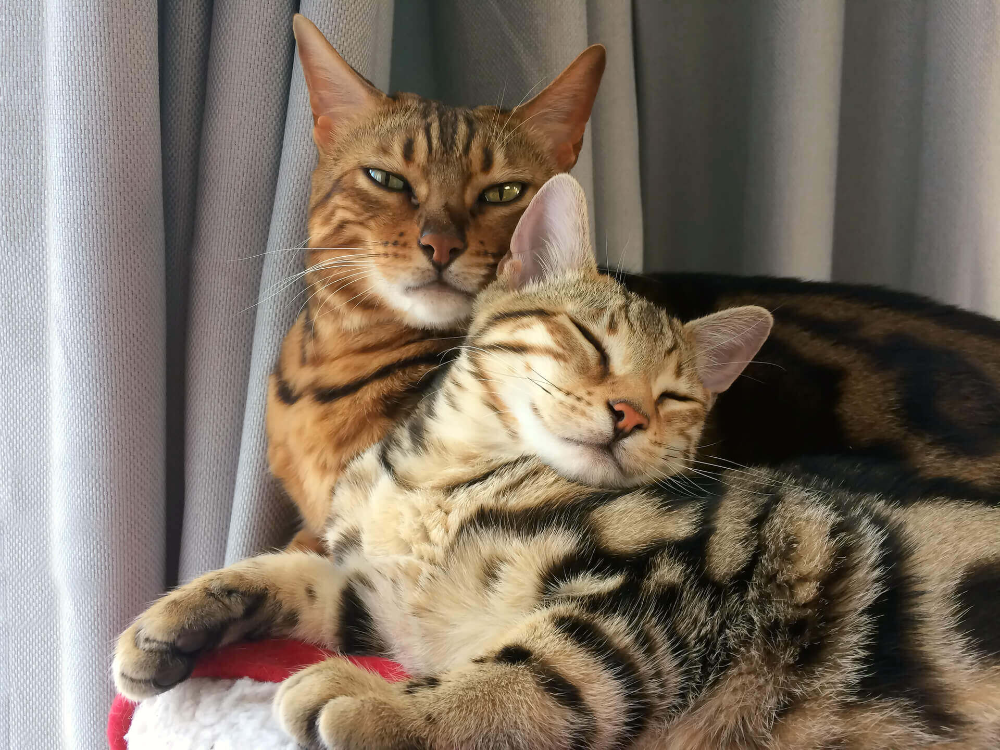

ВИДЫ ОКРАСА
ВИДЫ ОКРАСА
Главная особенность бенгальских кошек – их дикий окрас. Леопардовый пятнистый рисунок (браун-табби) или различные мраморные окрасы с причудливым узором отличают породу и роднят ее с дикими сородичами. Не бывает двух одинаковых бенгальских кошек – расположение и рисунок пятен или мрамора уникальны.Короткая шерсть бенгальских кошек обладает особенным блеском, доставшимся по наследству от диких предков. Такое сияние особенно ценится в породе и называется «глиттер».
Интересно, что котята у бенгальских кошек рождаются с ярким рисунком на шерстке, а в возрасте 3-4 недель начинают блекнуть – этот процесс также унаследован от диких предков. Считается, что в месячном возрасте котята дикой кошки начинают вылезать из гнезда и могут стать легкой добычей других хищников, а такой размытый, тусклый окрас становится для них естественной маскировкой до тех пор, пока они не научатся избегать опасности. Этот процесс появления белесых ворсинок, растушевывающих основной пятнистый или мраморный окрас, называется «фаззинг» и может продолжаться до 4-6 месяцев. Окончательно окрас устанавливается к возрасту 8-10 месяцев.Пятнистый леопардовый окрас – визитная карточка бенгальских кошек. Он встречается чаще, чем мраморный. Окрас под названием «снежный барс» (пятнистый, в серых и серебристых тонах) тоже очень красив. Котята этого окраса рождаются на свет белыми, а пятна на них появляются через несколько недель.
Бенгальская мраморная кошка и бенгальская серебристая кошка легко узнаваемы благодаря атлетичному корпусу, длинным лапам и характерному для бенгальской породы строению черепа.
ХАРАКТЕР БЕНГАЛЬСКОЙ КОШКИ ОХОТНИЧЬИ ИНСТИНКТЫ
Характер кошек этой породы имеет свои особенности. Дикие предки бенгальских кошек гораздо ближе в генеалогическом древе, нежели у других пород домашних кошек, поэтому темперамент бенгальского кота может быть взрывным и ярким, как и их внешность.Это прирожденные охотники: они легко справляются даже с крупными грызунами, им по силам сложная добыча. Поэтому, если дома живут мелкие питомцы – птицы, хомяки, рыбки, то они нуждаются в дополнительной защите. А вот с собаками бенгальская кошка может даже подружиться. С другими кошками представители бенгальской породы тоже обычно хорошо уживаются: они не склонны к дракам, очень умны и игривы.

© Drugakov Denis Dmitrievich